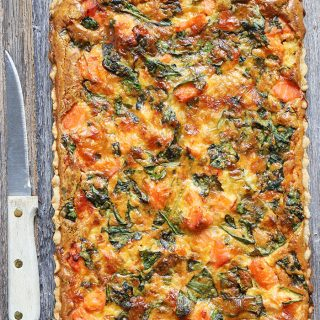

Quiche de salmon
Ingredientes
- 1 1/2 taza de harina
- 1/2 cucharadita de sal
- 1/4 taza de mantequilla
- 3–5 cucharaditas de agua fría
- 1 cucharada de aceite de oliva
- diente de ajo picado
- 350 grs de salmón limpio, sin piel y cortado en cuadros
- 3 huevos
- 1 taza de queso rallado, o mezclado con algún queso amarillo mantecoso
- 3/4 taza de crema de leche
- 1/4 taza de espinaca fresca
- 1 cucharadita de paprika (pimentón en polvo)
- Sal y pimienta a gusto
Preparacion
- En un bowl mezclar la harina y sal.Añadir la mantequilla picada en cuadros, unir con las manos hasta que la masa se desmigaja. Agregar el aceite y el agua fría. Formar una bola lisa. Aplane la masa y envuélvala con un plástico, y colóquela en el rfrigerador por 15 minutos. Luego colocar la masa en un molde redondo o cuadrado. Pinchar con el tenedor y llevar al horno por 20 minutos a 275°F (140°C)
- En un sartén calentar el aceite y freír la cebolla por unos 2 minutos, agregar el ajo y los puerros cortados. Cocinar por unos 3 minutos y añadir el salmón. cocinar unos 2 minutos más. Luego en un bowl mezclar los huevos, crema, queso,espinacas. Añada la mezcla del sartén. Unir bien y distribuir sobre la masa. Llevar al horno por 20 minutos a 400°F (200°C). Luego bajar la temperatura a 325°F (165°C) y seguir horneando unos 15 minutos más o hasta que esté dorado por encima. Retirar del horno y dejar enfríar un poco antes de servir.